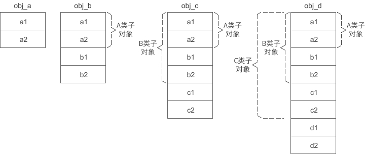
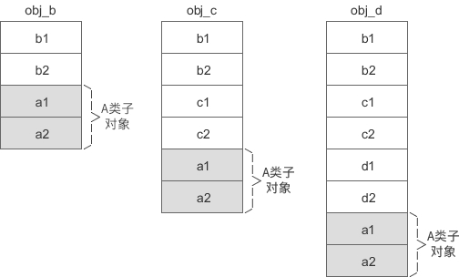
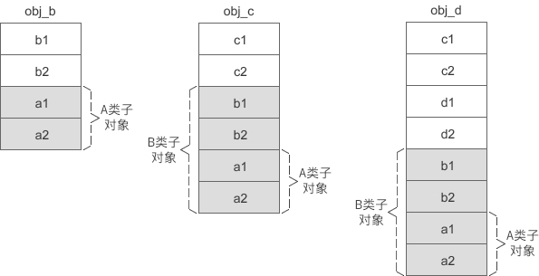
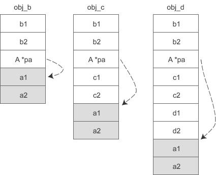
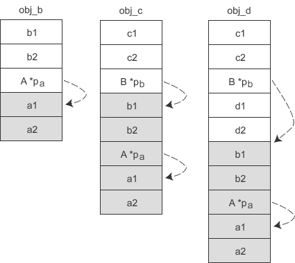
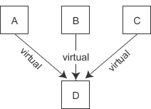
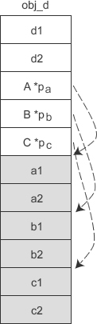
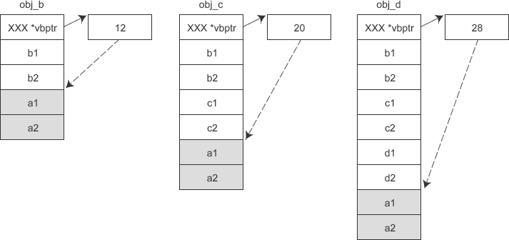
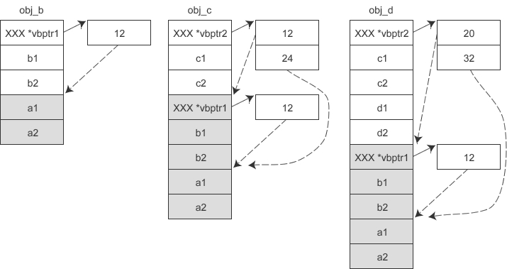
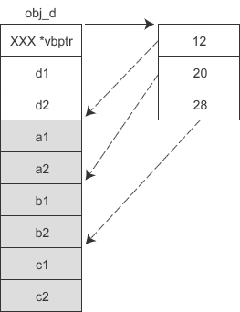

C++虚继承下的内存模型
简单的面向对象，只有单继承或多继承的情况下，内存模型很好理解，编译器实现起来也容易，C++ 的效率和 C 的效率不相上下。一旦和 virtual 关键字扯上关系，使用到虚继承或虚函数，内存模型就变得混乱起来，各种编译器的实现也不一致，让人抓狂。
这是因为 C++ 标准仅对 C++ 的实现做了框架性的概述，并没有规定细节如何实现，所以不同厂商的编译器在具体实现方案上会有所差异。
本节我们只关注虚继承时的内存模式，有关虚函数的内容将在《C++虚函数详解》一节中讲解。
对于普通继承，基类子对象始终位于派生类对象的前面（也即基类成员变量始终在派生类成员变量的前面），而且不管继承层次有多深，它相对于派生类对象顶部的偏移量是固定的。请看下面的例子：
obj_a、obj_b、obj_c、obj_d 的内存模型如下所示：
A 是最顶层的基类，在派生类 B、C、D 的对象中，A 类子对象始终位于最前面，偏移量是固定的，为 0。b1、b2 是派生类 B 的新增成员变量，它们的偏移量也是固定的，分别为 8 和 12。c1、c2、d1、d2 也是同样的道理。
前面我们说过，编译器在知道对象首地址的情况下，通过计算偏移来存取成员变量。对于普通继承，基类成员变量的偏移是固定的，不会随着继承层级的增加而改变，存取起来非常方便。
而对于虚继承，恰恰和普通继承相反，大部分编译器会把基类成员变量放在派生类成员变量的后面，这样随着继承层级的增加，基类成员变量的偏移就会改变，就得通过其他方案来计算偏移量。
下面我们来一步一步地分析虚继承时的对象内存模型。
1) 修改上面的代码，使得 A 是 B 的虚基类：
不管是虚基类的直接派生类还是间接派生类，虚基类的子对象始终位于派生类对象的最后面。
2) 再假设 A 是 B 的虚基类，B 又是 C 的虚基类，那么各个对象的内存模型如下图所示：
从上面的两张图中可以发现，虚继承时的派生类对象被分成了两部分：
当要访问对象的成员变量时，需要知道对象的首地址和变量的偏移，对象的首地址很好获得，关键是变量的偏移。对于固定部分，偏移是不变的，很好计算；而对于共享部分，偏移会随着继承层次的增加而改变，这就需要设计一种方案，在偏移不断变化的过程中准确地计算偏移。各个编译器正是在设计这一方案时出现了分歧，不同的编译器设计了不同的方案来计算共享部分的偏移。
1) 如果 A 是 B 的虚基类，那么各个对象的实际内存模型如下所示：
编译器会在直接派生类的对象 obj_b 中安插一个指针，指向虚基类 A 的起始位置，并且这个指针的偏移是固定的，不会随着继承层次的增加而改变。当要访问 a1、a2 时，要先通过对象指针找到 pa，再通过 pa 找到 a1、a2，这样一来就比没有虚继承时多了一层间接。
假设 p 是obj_d 的指针，现在要访问成员变量 a2：
2) 如果 A 是 B 的虚基类，同时 B 也是 C 的虚基类，那么各个对象的实际内存模型如下所示：
当要访问 a1、a2 时，要先通过对象指针找到 pb，再通过 pb 找到 pa，最后才能通过 pa 找到 a1、a2，这样一来就比没有虚继承时多了两层间接。
通过上面的分析可以发现，这种方案的一个缺点就是，随着虚继承层次的增加，访问顶层基类需要的间接转换会越来越多，效率越来越低。
这种方案另外的一个缺点是：当有多个虚基类时，派生类要为每个虚基类都安插一个指针，会增加对象的体积。例如，假设 A、B、C、D 类的继承关系为：
obj_d 的内存模型如下图所示：
D 有三个虚基类，所以 obj_d 对象要额外背负三个指针 pa、pab、pc。
VC 引入了虚基类表，如果某个派生类有一个或多个虚基类，编译器就会在派生类对象中安插一个指针，指向虚基类表。虚基类表其实就是一个数组，数组中的元素存放的是各个虚基类的偏移。
假设 A 是 B 的虚基类，那么各对象的内存模型如下图所示：
假设 A 是 B 的虚基类，同时 B 又是 C 的虚基类，那么各对象的内存模型如下图所示：
虚继承表中保存的是所有虚基类（包括直接继承和间接继承到的）相对于当前对象的偏移，这样通过派生类指针访问虚基类的成员变量时，不管继承层次都多深，只需要一次间接转换就可以。
另外，这种方案还可以避免有多个虚基类时让派生类对象额外背负过多的指针。例如，假设 A、B、C、D 类的继承关系为：
那么 obj_d 的内存模型如下图所示：
如此一来，D 类虽然有三个虚基类，但它的对象 obj_d 只需要额外背负一个指针。
这是因为 C++ 标准仅对 C++ 的实现做了框架性的概述，并没有规定细节如何实现，所以不同厂商的编译器在具体实现方案上会有所差异。
本节我们只关注虚继承时的内存模式，有关虚函数的内容将在《C++虚函数详解》一节中讲解。
对于普通继承，基类子对象始终位于派生类对象的前面（也即基类成员变量始终在派生类成员变量的前面），而且不管继承层次有多深，它相对于派生类对象顶部的偏移量是固定的。请看下面的例子：
- class A{
- protected:
- int m_a1;
- int m_a2;
- };
- class B: public A{
- protected:
- int b1;
- int b2;
- };
- class C: public B{
- protected:
- int c1;
- int c2;
- };
- class D: public C{
- protected:
- int d1;
- int d2;
- };
- int main(){
- A obj_a;
- B obj_b;
- C obj_c;
- D obj_d;
- return 0;
- }

A 是最顶层的基类，在派生类 B、C、D 的对象中，A 类子对象始终位于最前面，偏移量是固定的，为 0。b1、b2 是派生类 B 的新增成员变量，它们的偏移量也是固定的，分别为 8 和 12。c1、c2、d1、d2 也是同样的道理。
前面我们说过，编译器在知道对象首地址的情况下，通过计算偏移来存取成员变量。对于普通继承，基类成员变量的偏移是固定的，不会随着继承层级的增加而改变，存取起来非常方便。
而对于虚继承，恰恰和普通继承相反，大部分编译器会把基类成员变量放在派生类成员变量的后面，这样随着继承层级的增加，基类成员变量的偏移就会改变，就得通过其他方案来计算偏移量。
下面我们来一步一步地分析虚继承时的对象内存模型。
1) 修改上面的代码，使得 A 是 B 的虚基类：
class B: virtual public A
此时 obj_b、obj_c、obj_d 的内存模型就会发生变化，如下图所示：

不管是虚基类的直接派生类还是间接派生类，虚基类的子对象始终位于派生类对象的最后面。
2) 再假设 A 是 B 的虚基类，B 又是 C 的虚基类，那么各个对象的内存模型如下图所示：

从上面的两张图中可以发现，虚继承时的派生类对象被分成了两部分：
- 不带阴影的一部分偏移量固定，不会随着继承层次的增加而改变，称为固定部分；
- 带有阴影的一部分是虚基类的子对象，偏移量会随着继承层次的增加而改变，称为共享部分。
当要访问对象的成员变量时，需要知道对象的首地址和变量的偏移，对象的首地址很好获得，关键是变量的偏移。对于固定部分，偏移是不变的，很好计算；而对于共享部分，偏移会随着继承层次的增加而改变，这就需要设计一种方案，在偏移不断变化的过程中准确地计算偏移。各个编译器正是在设计这一方案时出现了分歧，不同的编译器设计了不同的方案来计算共享部分的偏移。
对于虚继承，将派生类分为固定部分和共享部分，并把共享部分放在最后，几乎所有的编译器都在这一点上达成了共识。主要的分歧就是如何计算共享部分的偏移，可谓是百花齐放，没有统一标准。
cfront解决方案
早期的 cfront 编译器会在派生类对象中安插一些指针，每个指针指向一个虚基类的子对象，要存取继承来的成员变量，可以使用指针间接完成。1) 如果 A 是 B 的虚基类，那么各个对象的实际内存模型如下所示：

编译器会在直接派生类的对象 obj_b 中安插一个指针，指向虚基类 A 的起始位置，并且这个指针的偏移是固定的，不会随着继承层次的增加而改变。当要访问 a1、a2 时，要先通过对象指针找到 pa，再通过 pa 找到 a1、a2，这样一来就比没有虚继承时多了一层间接。
假设 p 是obj_d 的指针，现在要访问成员变量 a2：
int member_a2 = p -> a2;
那么编译器内部会进行类似下面的转换：
- A *pa = (A*)( *(int*)( (int)p + sizeof(int)*2 ) );
- int member_a2 = *(int*)( (int)pa + sizeof(int) );
2) 如果 A 是 B 的虚基类，同时 B 也是 C 的虚基类，那么各个对象的实际内存模型如下所示：

当要访问 a1、a2 时，要先通过对象指针找到 pb，再通过 pb 找到 pa，最后才能通过 pa 找到 a1、a2，这样一来就比没有虚继承时多了两层间接。
通过上面的分析可以发现，这种方案的一个缺点就是，随着虚继承层次的增加，访问顶层基类需要的间接转换会越来越多，效率越来越低。
这种方案另外的一个缺点是：当有多个虚基类时，派生类要为每个虚基类都安插一个指针，会增加对象的体积。例如，假设 A、B、C、D 类的继承关系为：

obj_d 的内存模型如下图所示：

D 有三个虚基类，所以 obj_d 对象要额外背负三个指针 pa、pab、pc。
VC解决方案
cfront 的后来者 VC 尝试对上面的方案进行了改进，一定程度上弥补了它的不足。VC 引入了虚基类表，如果某个派生类有一个或多个虚基类，编译器就会在派生类对象中安插一个指针，指向虚基类表。虚基类表其实就是一个数组，数组中的元素存放的是各个虚基类的偏移。
假设 A 是 B 的虚基类，那么各对象的内存模型如下图所示：

假设 A 是 B 的虚基类，同时 B 又是 C 的虚基类，那么各对象的内存模型如下图所示：

虚继承表中保存的是所有虚基类（包括直接继承和间接继承到的）相对于当前对象的偏移，这样通过派生类指针访问虚基类的成员变量时，不管继承层次都多深，只需要一次间接转换就可以。
另外，这种方案还可以避免有多个虚基类时让派生类对象额外背负过多的指针。例如，假设 A、B、C、D 类的继承关系为：
那么 obj_d 的内存模型如下图所示：

如此一来，D 类虽然有三个虚基类，但它的对象 obj_d 只需要额外背负一个指针。
关注微信公众号「站长严长生」，在手机上阅读所有教程，随时随地都能学习。本公众号由C语言中文网站长运营，每日更新，坚持原创，敢说真话，凡事有态度。

微信扫描二维码关注公众号